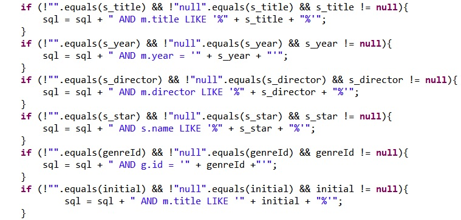

How we used "Like" in searching |
|
|

|
1.Firstly, before searching by these attributes,check whether they are null or not. If null, they will not be added into the sql sentence.
2.The "year" attribute doesn't support fuzzy search. So we just used "=" in the search of year rather than "like". 3.For other attribute the input can be any part of the result: start, middle, or end. So we have to add "%" to both side of the input to find the result. For example : if we input a "ap" into the input text, words starts from ap like "apply" or stops by ap like "map" or contains it like "happy" can all apply to such situation. |